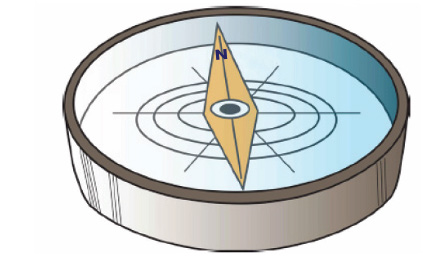
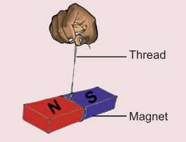

Identifying the cardinal directions
The compass is a device made up by using a magnet. It shows the direction of the North and South poles of the Earth as seen in Figure 10. The compass is used to guide people in identifying the cardinal directions. It is also used to guide captains and pilots to move in the correct direction.

Experiment 4: Investigating how to find direction using the magnet
Aim: Identifying the south and north directions of the Earth
Materials: A bar magnet and a thread
Procedure
- 1. Tie the thread on the magnet and then suspend that magnet in the air, as shown in Figure 11.
- 2. Wait until the magnet settles.

Thread
Magnet